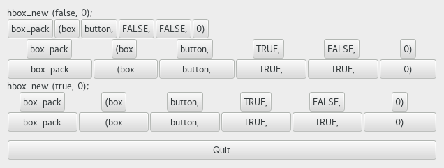
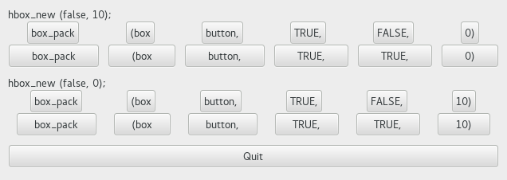

| GTK+ 2.0 Tutorial using Ocaml | ||
|---|---|---|
| <<< Previous | Packing Widgets | Next >>> |
Because of this flexibility, packing boxes in GTK can be confusing at first. There are a lot of options, and it's not immediately obvious how they all fit together. In the end, however, there are basically five different styles.

Each line contains one horizontal box (hbox) with several buttons. The call to #pack method is shorthand for the call to pack each of the buttons into the hbox. Each of the buttons is packed into the hbox the same way.
This is the declaration of the #pack method.
method pack : ?from:Gtk.Tags.pack_type -> ?expand:bool -> ?fill:bool -> ?padding:int -> GObj.widget -> unit from : default value is `START expand : default vaue is false fill : default value is true, ignored if expand is false |
The first optional argument from can have `START or `END. The ~from:`START will start at the top and work its way down in a vbox, and pack left to right in an hbox. The ~from:`END will do the opposite, packing from bottom to top in a vbox, and right to left in an hbox. Using from option allows us to right justify or left justify our widgets and may be mixed in any way to achieve the desired effect.
The expand argument controls whether the widgets are laid out in the box to fill in all the extra space in the box so the box is expanded to fill the area allotted to it (true); or the box is shrunk to just fit the widgets (false). Setting expand to false will allow you to do right and left justification of your widgets. Otherwise, they will all expand to fit into the box.
The fill argument to the #pack method control whether the extra space is allocated to the objects themselves (true), or as extra padding in the box around these objects (false). It only has an effect if the expand argument is also true.
The last argument is the object you are packing into the box. The objects will all be buttons for now, so we'll be packing buttons into boxes.
When creating a new box, the function looks like this (GPack.hbox ()):
GPack.hbox : ?homogeneous:bool -> ?spacing:int -> ?border_width:int -> ?width:int -> ?height:int -> ?packing:(GObj.widget -> unit) -> ?show:bool -> unit -> box spacing: 0 by default homogeneous: false by default |
The homogeneous argument to GPack.hbox () (and the same for GPack.vbox ()) controls whether each object in the box has the same size (i.e., the same width in an hbox, or the same height in a vbox). If it is set, the #pack method essentially as if the expand argument was always turned on.
What's the difference between spacing (set when the box is created) and padding (set when elements are packed)? Spacing is added between objects, and padding is added on either side of an object. The following figure should make it clearer:

Here is the code used to create the above images. I've commented it fairly heavily so I hope you won't have any problems following it. Compile it yourself and play with it.
| <<< Previous | Home | Next >>> |
| Packing Widgets | Up | Packing Demonstration Program |